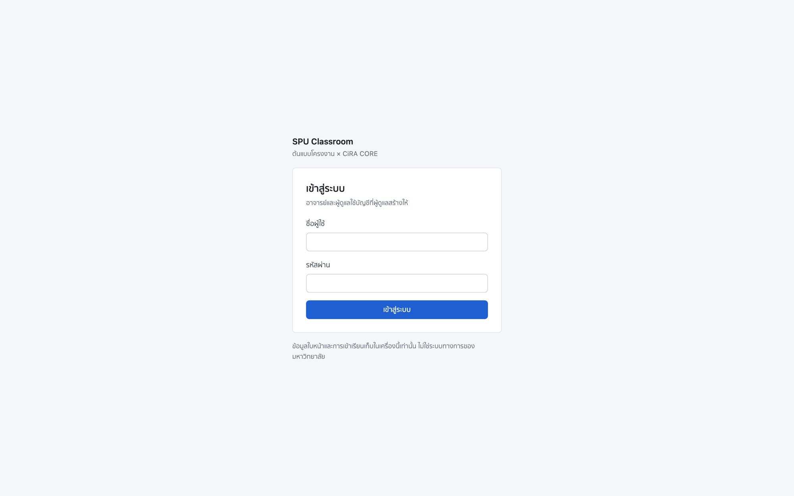
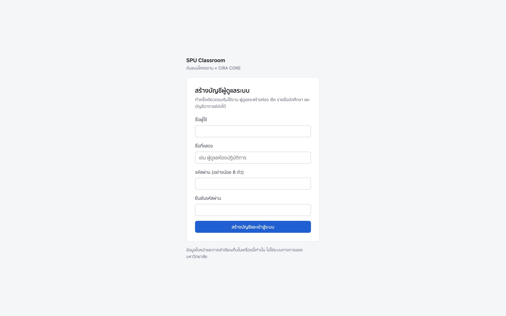
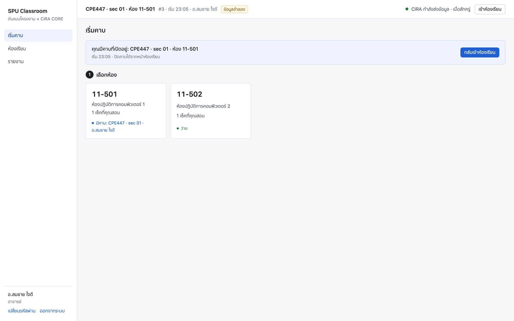
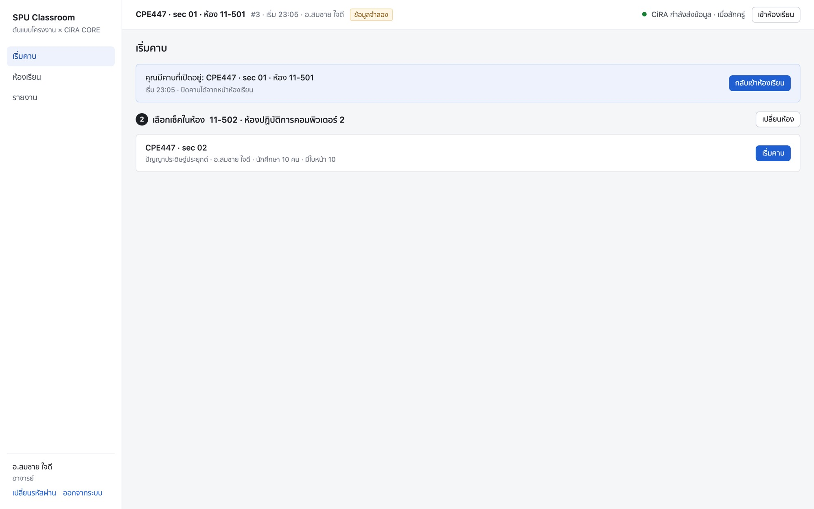
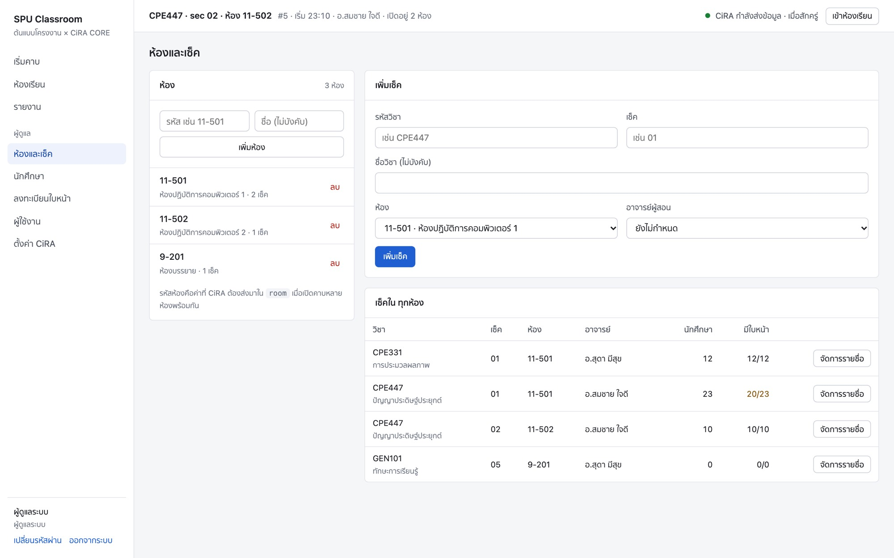
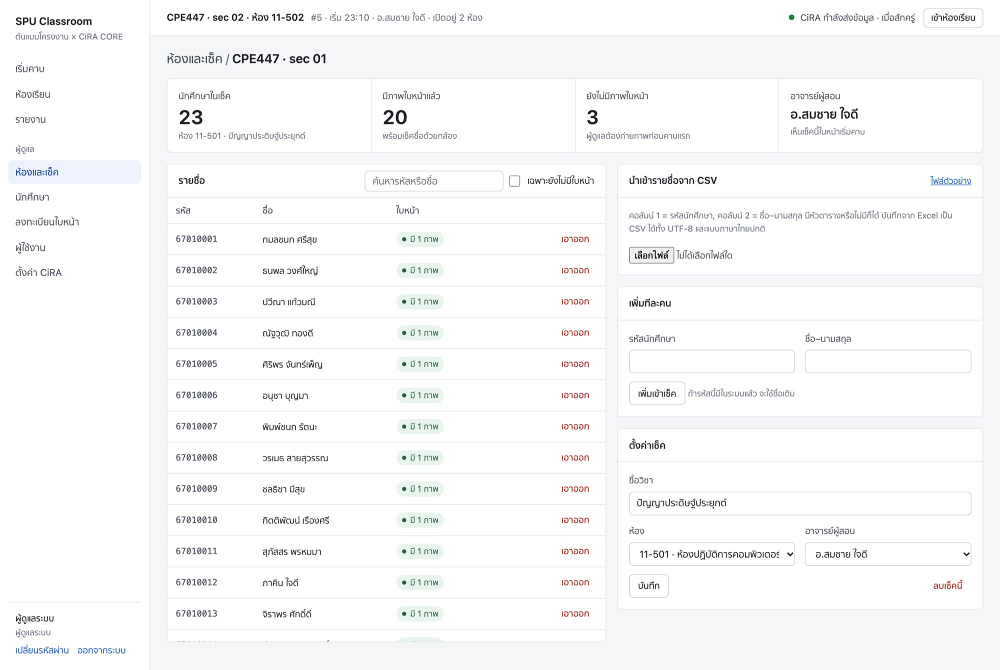
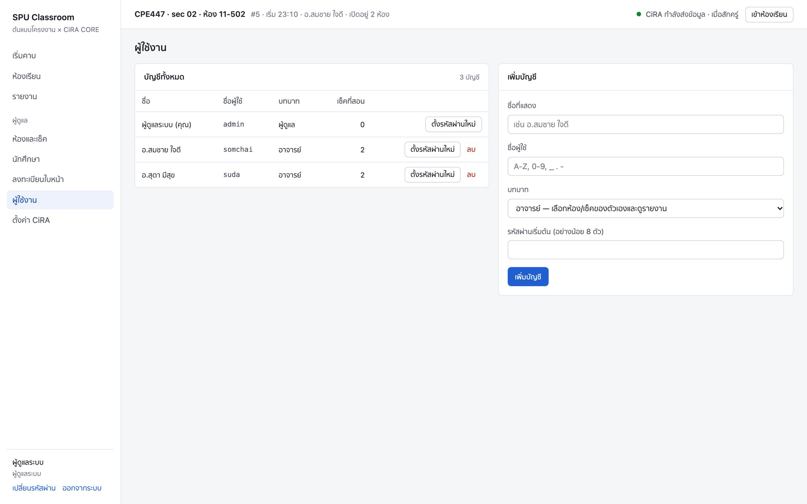
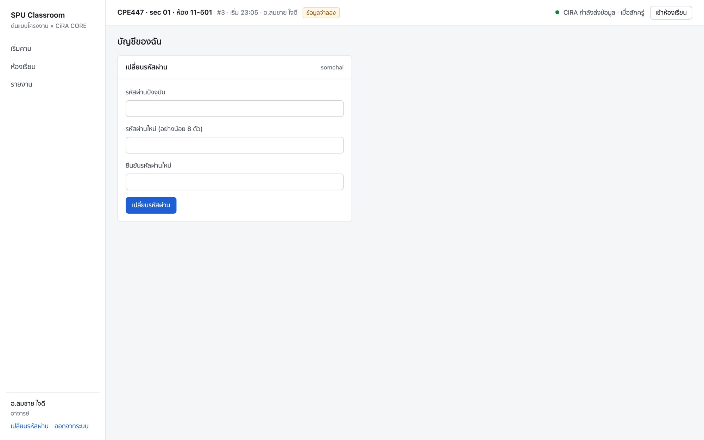

SPU Classroom · CiRA CORE
ภาพตัวอย่างหน้าเว็บ
ทุกหน้า
เว็บเช็คชื่อด้วยใบหน้าและสรุปพฤติกรรมในห้องเรียน (ตั้งใจเรียน / หลับ) ที่รับข้อมูลจาก CiRA CORE แยกการใช้งานของอาจารย์และผู้ดูแล
ข้อมูลในภาพทั้งหมดเป็นข้อมูลจำลอง ชื่อนักศึกษา อาจารย์ รหัส และห้องเป็นข้อมูลสมมติ ตัวเลขพฤติกรรมมาจากตัวจำลอง (simulate_cira.py) และภาพสังเคราะห์ ไม่ใช่ผลจากห้องเรียนหรือโมเดลจริง
- อาจารย์
- 1เข้าสู่ระบบ
- 2เลือกห้อง
- 3เลือกเซ็คแล้วเริ่มคาบ
- 4ห้องเรียน ระหว่างคาบ
- 5ห้องเรียน เมื่อ CiRA แนบภาพ
- 6รายงาน
- ผู้ดูแล
- 7ห้องและเซ็ค
- 8รายชื่อเซ็คและนำเข้า CSV
- 9ลงทะเบียนใบหน้า
- 10นักศึกษา
- 11ผู้ใช้งานและบัญชีของฉัน
- 12ตั้งค่า CiRA
- 13บนมือถือ
- Repository
- github.com/Porlager/spu-cira-attendance
- ถ่ายภาพเมื่อ
- 19 ตุลาคม 2026 · หน้าจอกว้าง 1440 px และมือถือ 390 px
- ดีไซน์
- ธีมสว่าง สีเน้นน้ำเงินสีเดียว ฟอนต์ระบบ ไม่ใช้ CDN
ส่วนที่ 1
อาจารย์
เข้าสู่ระบบ → เลือกห้อง → เลือกเซ็คที่ตัวเองสอน → เริ่มคาบ แล้วดูผลสดและรายงาน อาจารย์เห็นเฉพาะห้องและเซ็คที่ผู้ดูแลกำหนดให้
1. เข้าสู่ระบบ

เข้าสู่ระบบด้วยบัญชีที่ผู้ดูแลสร้างให้ ใส่รหัสผิด 5 ครั้งติดกันจะถูกพัก 1 นาที

ครั้งแรกที่เปิดเว็บ (ยังไม่มีบัญชีใดเลย) ระบบจะให้สร้างบัญชีผู้ดูแลก่อน หน้านี้ใช้ได้ครั้งเดียว
2. เลือกห้อง
หน้าแรกหลังเข้าสู่ระบบ แสดงเฉพาะห้องที่มีเซ็คของอาจารย์คนนี้
- การ์ดห้องบอกจำนวนเซ็คที่สอนในห้องนั้น และสถานะ "ว่าง" หรือ "มีคาบ" (สีน้ำเงิน = คาบของตัวเอง, สีส้ม = คาบของคนอื่น)
- ถ้ามีคาบเปิดค้างอยู่ จะมีแถบด้านบนพร้อมปุ่ม "กลับเข้าห้องเรียน"

3. เลือกเซ็คแล้วเริ่มคาบ
หลังเลือกห้อง ระบบแสดงเซ็คที่อาจารย์สอนในห้องนั้น กด "เริ่มคาบ" แล้วไปหน้าห้องเรียนทันที
- แต่ละเซ็คบอกจำนวนนักศึกษาและจำนวนที่มีภาพใบหน้าแล้ว ถ้ายังมีคนไม่มีภาพจะเตือนไว้ข้างปุ่ม
- เปิดได้ห้องละ 1 คาบ ถ้าห้องมีคาบของคนอื่นเปิดอยู่ ปุ่มจะกดไม่ได้

4. ห้องเรียน ระหว่างคาบ
หน้าที่อาจารย์เปิดค้างไว้ระหว่างคาบ อัปเดตทุก 1 วินาที
- แถบบน: วิชา · เซ็ค · ห้อง · อาจารย์ ป้าย "ข้อมูลจำลอง" (เฉพาะคาบจำลอง) และสถานะ CiRA
- ตัวเลขสรุป: เข้าเรียน x/คนในเซ็ค (บอกจำนวนที่มีภาพใบหน้า) · % ตั้งใจเรียนเฉลี่ย 10 วินาที · หลับ · คนในภาพ
- ภาพล่าสุดจาก CiRA: กรอบสีตามพฤติกรรม เขียว = ตั้งใจ, ส้ม = ไม่ตั้งใจ, แดง = หลับ
- รายชื่อ: เฉพาะนักศึกษาในเซ็ค พร้อมเวลาเช็คชื่อ สถานะปัจจุบัน และ % ตั้งใจของแต่ละคน

5. ห้องเรียน เมื่อ CiRA แนบภาพ
ภาพนี้ถ่ายตอนเปิดคาบ 2 ห้องพร้อมกัน (11-501 จำลอง และ 11-502) CiRA ส่ง room = 11-502 ข้อมูลจึงเข้าห้องนี้ถูกห้อง
- ส่ง payload ของ DeepDetect ทั้งก้อน (x,y เป็นจุดกึ่งกลาง พร้อม
im_w/im_h) ผ่าน cira_bridge.py กรอบตรงกับคนในภาพ
- ภาพเป็น ภาพสังเคราะห์ ไม่มีใบหน้าให้จำ เข้าเรียนจึงเป็น 0
- ภาพเก็บในหน่วยความจำเฉพาะเฟรมล่าสุด ไม่บันทึกลงดิสก์ ปิดคาบแล้วหายทันที
- ในโหมด "กล้องเครื่องนี้" กรอบใบหน้าที่จำได้เป็นสีน้ำเงิน ที่จำไม่ได้เป็นสีเทา ไม่ใช้สีส้มซ้ำกับ "ไม่ตั้งใจ"

6. รายงาน
สรุปย้อนหลังรายคาบ อาจารย์เห็นเฉพาะคาบของเซ็คตัวเอง
- ตัวเลขสรุป · กราฟ % ตั้งใจเรียนและจำนวนคนหลับรายนาที · ตารางรายบุคคลเฉพาะคนในเซ็ค
- ปุ่ม "ดาวน์โหลด CSV" ได้ไฟล์ที่เปิดใน Excel ได้ภาษาไทย

ส่วนที่ 2
ผู้ดูแล
เตรียมข้อมูลทั้งหมดก่อนเปิดเทอม: บัญชีอาจารย์ ห้อง เซ็ค รายชื่อนักศึกษา (นำเข้า CSV) และภาพใบหน้า อาจารย์จึงเข้ามาเลือกห้องและเริ่มคาบได้ทันที
7. ห้องและเซ็ค
ซ้ายคือรายการห้อง (กดเพื่อกรองเซ็ค) ขวาคือฟอร์มเพิ่มเซ็คและตารางเซ็คทั้งหมด
- รหัสห้องคือค่าที่ CiRA ส่งมาใน
room เมื่อเปิดคาบหลายห้องพร้อมกัน
- คอลัมน์ "มีใบหน้า" สีส้มเมื่อยังมีนักศึกษาที่ยังไม่ถ่ายภาพ
- ลบห้องที่ยังมีเซ็ค หรือเซ็คที่มีประวัติคาบเรียนไม่ได้ กันข้อมูลหาย

8. รายชื่อเซ็คและนำเข้า CSV
หน้าของแต่ละเซ็ค: รายชื่อ สถานะภาพใบหน้า การนำเข้า CSV และการตั้งค่าเซ็ค
- นำเข้า CSV: คอลัมน์ 1 = รหัส, 2 = ชื่อ มีหัวตารางหรือไม่ก็ได้ อ่านได้ทั้ง CSV UTF-8 และ CSV ภาษาไทยของ Excel ระบบแสดงตัวอย่าง (เพิ่มกี่คน สร้างใหม่กี่คน แถวไหนผิด) ก่อนกดยืนยัน
- คนที่ยังไม่มีภาพใบหน้ามีลิงก์ "ถ่ายภาพ" ไปหน้าลงทะเบียนใบหน้าพร้อมเลือกคนนั้นไว้ให้
- เพิ่มทีละคน เอาออกจากเซ็ค เปลี่ยนห้องหรืออาจารย์ผู้สอนได้ในหน้านี้

9. ลงทะเบียนใบหน้า
เป็นหน้าที่ของผู้ดูแลเท่านั้น ค้นหานักศึกษาจากรายชื่อที่นำเข้าแล้ว (เรียงคนที่ยังไม่มีภาพขึ้นก่อน) ถ่าย 3–8 ภาพ ติ๊กยินยอม แล้วบันทึก

10. นักศึกษา
นักศึกษาทั้งระบบ พร้อมเซ็คที่อยู่ สถานะภาพใบหน้า และจำนวนคาบที่เข้าเรียน กรอง "ยังไม่มีใบหน้า" ได้

11. ผู้ใช้งานและบัญชีของฉัน

ผู้ดูแลเพิ่มบัญชีอาจารย์หรือผู้ดูแล ตั้งรหัสผ่านใหม่ให้ และลบบัญชี (ลบตัวเองหรือผู้ดูแลคนสุดท้ายไม่ได้) รหัสผ่านเก็บแบบ hash

ทุกคนเปลี่ยนรหัสผ่านของตัวเองได้จากลิงก์ใต้ชื่อในเมนูซ้าย
12. ตั้งค่า CiRA
ปรับให้ตรงกับโมเดลใน CiRA โดยไม่ต้องแก้โค้ด มีผลกับเฟรมถัดไปทันที
- การจับคู่คลาส: ชื่อคลาสจาก DeepDetect → ตั้งใจ / ไม่ตั้งใจ / หลับ / ใช้โทรศัพท์ / คน / ไม่นับ
- รูปแบบข้อมูล: ค่าเริ่มต้นตรงกับเอกสาร CiRA (x,y จุดกึ่งกลาง, พิกเซล, confidence 0–1) · ตรวจการใช้โทรศัพท์ปิดไว้
- ขวา: endpoint, path ของไฟล์ API key (ไม่แสดงตัวคีย์), โค้ดตัวอย่าง และ payload ล่าสุดจาก CiRA

13. บนมือถือ
เมนูย้ายขึ้นด้านบนและเลื่อนซ้ายขวาได้ การ์ดและตัวเลขเรียงเป็นคอลัมน์เดียว ตารางเลื่อนแนวนอนได้
เริ่มคาบ
ห้องเรียน (แสดงเฉพาะส่วนบน)